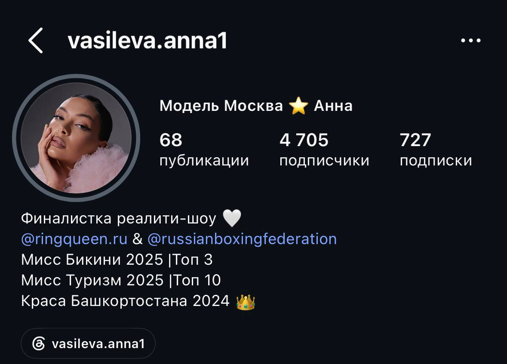
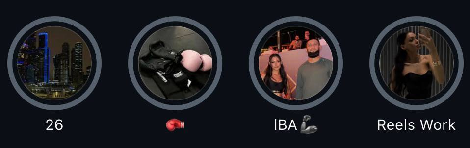
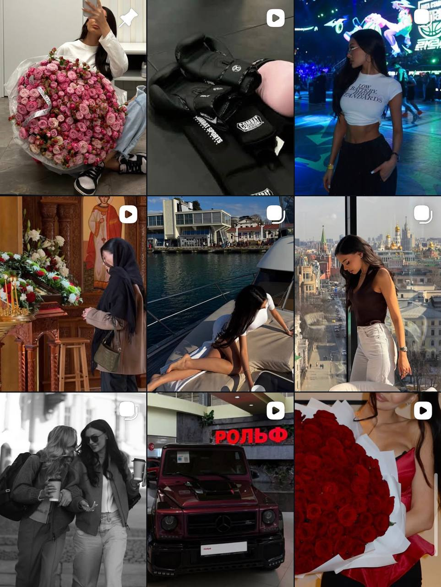
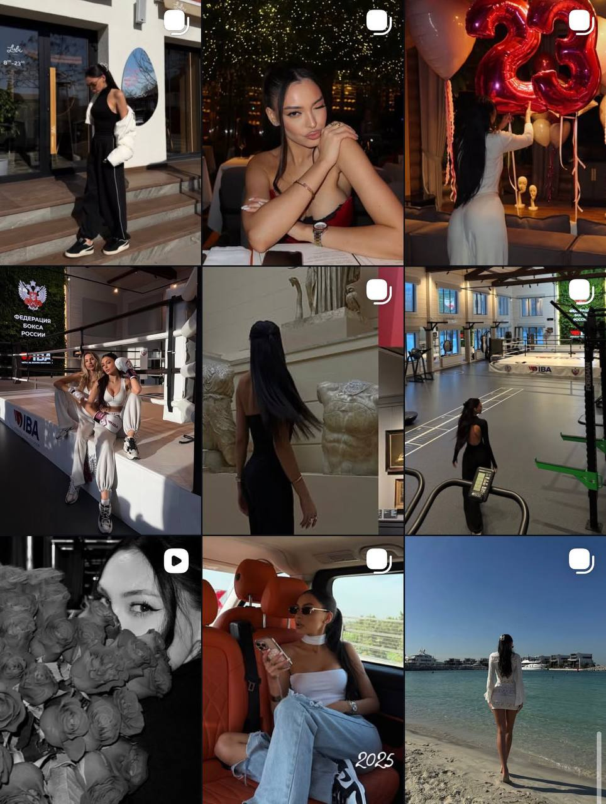

Анна Васильева
Модель · Москва
Финалистка реалити‑шоу Ring Queen. Лицо @ringqueen.ru и Федерации Бокса России. Сотрудничество с IBA и Рольф. Мисс Бикини 2025 — Топ 3. Мисс Туризм 2025 — Топ 10. Краса Башкортостана 2024.
Профиль @vasileva.anna1. Display‑имя — «Модель Москва ⭐️ Анна». Шапка собирает в одну точку: реалити‑шоу Ring Queen, Федерация Бокса России, три титула красоты, региональная корона.

68 публикаций · 4 705 подписчиков · 727 подписок. Bio формирует образ «модель + спорт + конкурсы красоты + региональная история».

По 18 последним публикациям видно три параллельных потока — модельный лайфстайл, спортивно‑боксёрская ось и светская хроника. Всё на премиум‑визуале.


Визуальный код ленты — премиум‑эстетика, тёмная палитра, акцент на атрибутах: машина, букеты, премиум‑локации, корона.
Объективный взгляд внешнего зрителя — не критика, а точка отсчёта, от которой будем расти.
Лента собрана аккуратно, эстетика премиальная, есть «вау‑якоря»: Mercedes G‑Class Рольф, букеты, реалити, корона, IBA. Но если убрать атрибуты — за ними почти не считывается человек. Внешние социальные доказательства есть в избытке, а Вашего голоса, ценностей, внутреннего мира в ленте практически нет.
Reels уже собирают миллионы просмотров. При этом конверсия в подписку — слабая: 4 705 подписчиков на ленте такого охвата выглядит аномально мало.
Это значит: зритель цепляется за картинку, но не цепляется за человека. Кадр досматривает, на профиль заходит, видит набор красивых фото без личной истории — и идёт дальше. Подписаться не за что: непонятно, кто Вы вне атрибутов.
Серия из шести роликов подряд за пять часов разгоняет алгоритм, но размывает позиционирование. Зритель не успевает связать ролики между собой и с Вами как с автором — каждый ролик воспринимается отдельно, без накопления контекста.
Сторителлинговые ролики у Вас есть — про путь, преодоления, истории. Но они тонут в общей массе трендовых нарезок с заголовками. Их нужно вынести в центр блога, а не использовать как редкий формат на фоне обычного контента.
Это не пересборка. Это шесть направлений, которые добавляются к тому, что уже есть, и закрывают главный пробел — раскрытие Вас как личности.
Главный пробел и главный рычаг. Подписчик хочет видеть не только «Модель Москва», а живого человека за этим образом.
Базовое раскрытие как женщины. Не выдуманный образ, а тот, который у Вас уже есть — просто пока не вынесен в блог.
Один из самых сильных недоиспользованных активов. Взаимодействие и коммуникация с семьёй — с мамой, с папой — это контент, который разрывает Instagram при таком уровне визуала.
Семейные форматы дают глубокий эмоциональный контакт и работают как универсальный мост к любой аудитории. Они закрывают вопрос «кто Вы вне модельной картинки» одним кадром.
Атрибуты женственности, связанные с Вашим происхождением — традиции, ритуалы, готовка, бытовые сцены, культурный код. То, что делает Вас не одной из моделей, а человеком с собственной историей.
При сильной обвязке (Ring Queen, IBA, Рольф, корона Башкортостана) это даёт мощный контраст: с одной стороны — премиум и федеральный уровень, с другой — корни, дом, традиции. Это работает.
Большой пласт, который у Вас уже есть в жизни — а в блоге почти отсутствует. Здесь Вы можете выстраивать узкую экспертную репутацию.
Этот формат стабильно конвертирует просмотр в подписку — потому что зритель получает пользу, а не просто эстетический кадр.
Сейчас Вы — лицо IBA, Федерации Бокса и Рольф. Партнёрский контент идёт, но он формальный: фото с мероприятия, перчатка, машина.
Если параллельно Вы начинаете говорить про семью, здоровье, женственность, ценности — Вы автоматически склеиваете личные ценности с ценностями партнёров. Спорт = здоровье. Бокс = сила и характер. Премиум‑авто = достижения. Корона = достоинство и культура.
Это даёт два эффекта одновременно:
Красивые проходки, эстетика повседневности, кадры «за кадром». Сборы перед съёмкой, дорога на мероприятие, утренние ритуалы, моменты между кадрами фотосессии.
Принципиально важно: откровенно — но сдержанно. Без сильных откровенностей. Если эстетика обнажения нужна — она должна быть супер‑выдержанной: художественная подача, тёплый свет, минимализм. Граница между «премиум» и «дёшево» здесь тонкая, и держать её — отдельная работа.
Этот формат закрепляет за Вами визуальный код, который потом будут копировать.
Каждое из шести направлений по отдельности — уже плюс. Но настоящий рост даёт их соединение в одну цельную картину.
Большинство моделей сейчас в одной точке: премиум‑картинка, атрибуты, fashion‑съёмки, бренд‑партнёрки. Все похожи. Никто не запоминается надолго.
У Вас уже есть редкая обвязка — Ring Queen, IBA, Федерация, корона, регион. Когда к этому добавляется живой человек со своими ценностями, семьёй, традициями — Вас невозможно перепутать ни с кем.
Сейчас Reels делают миллионы охватов, но люди не подписываются. После раскрытия Вас как личности этот же трафик начнёт конвертироваться: зритель цепляется за человека, идёт в профиль, видит — есть кого читать, и остаётся.
Это даёт здоровую базу — подписчиков, которые остаются с Вами надолго, а не размывают статистику.
Чем глубже считываются Ваши ценности — тем сильнее работает партнёрский контент. Бренды получают не «модель с лого», а полноценного амбассадора со своей историей и аудиторией, которая её разделяет.
Это открывает следующий уровень контрактов: длинные кампании, эксклюзивные истории, появление в стратегических активациях, а не разовые посты.
Текущая лента отвечает на вопрос «как красиво». Новая лента будет отвечать на вопрос «зачем» и «кто Вы». Это другой уровень блога — и другой уровень аудитории, партнёрств и возможностей.
Реалити Ring Queen, IBA, Федерация Бокса России, Рольф, три титула, корона региона, премиум‑визуал, миллионные охваты Reels.
Не хватает не нового — не хватает Вас в блоге как живого человека и точечной работы с форматами, которые раскроют то, что у Вас уже есть.
Это та работа, которой я занимаюсь.
С уважением, Малик May · 2026